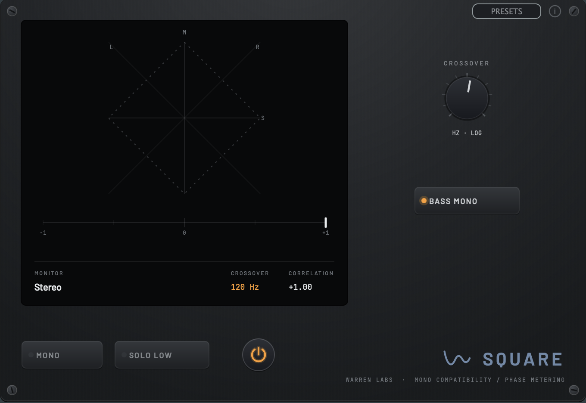
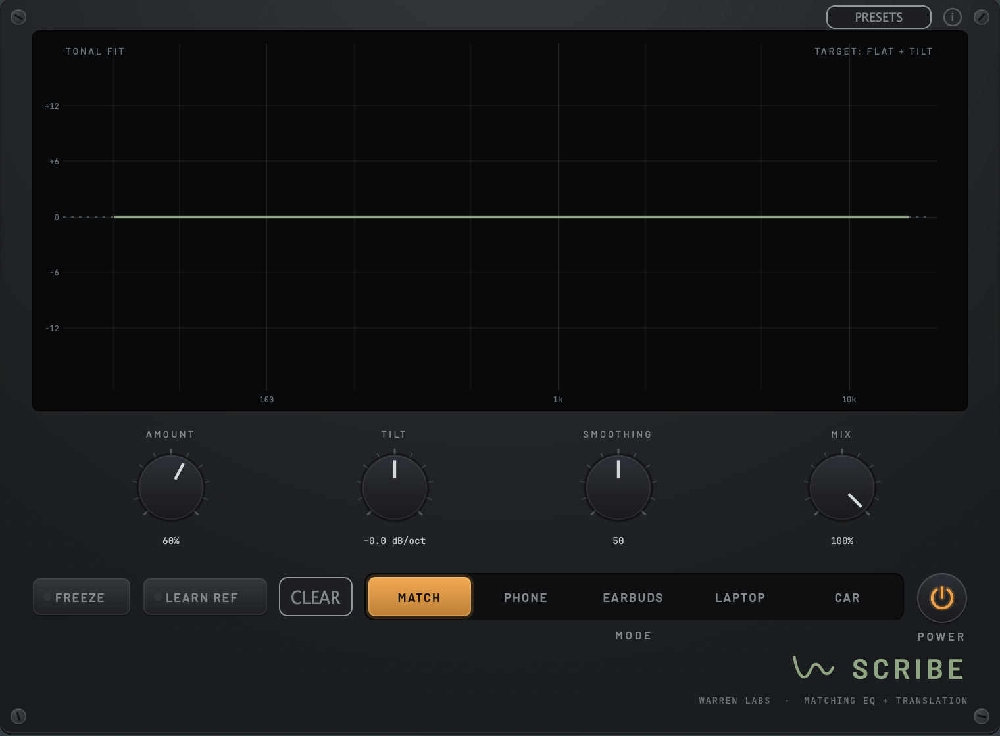
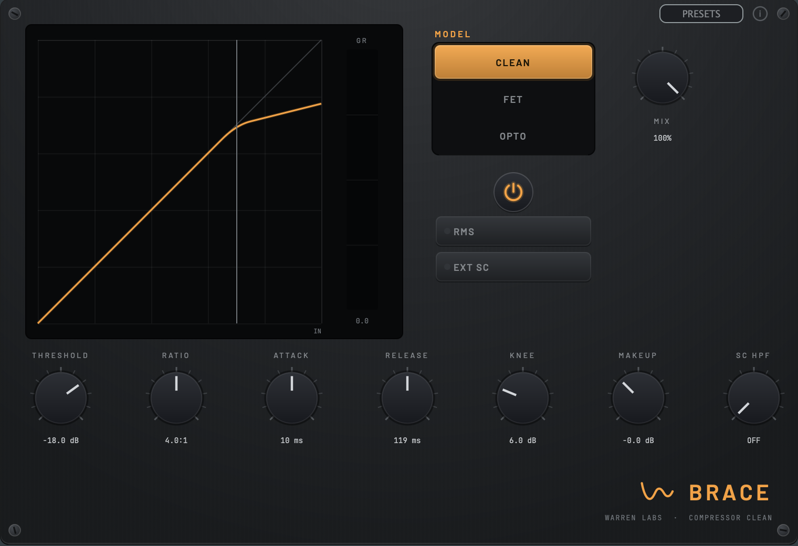
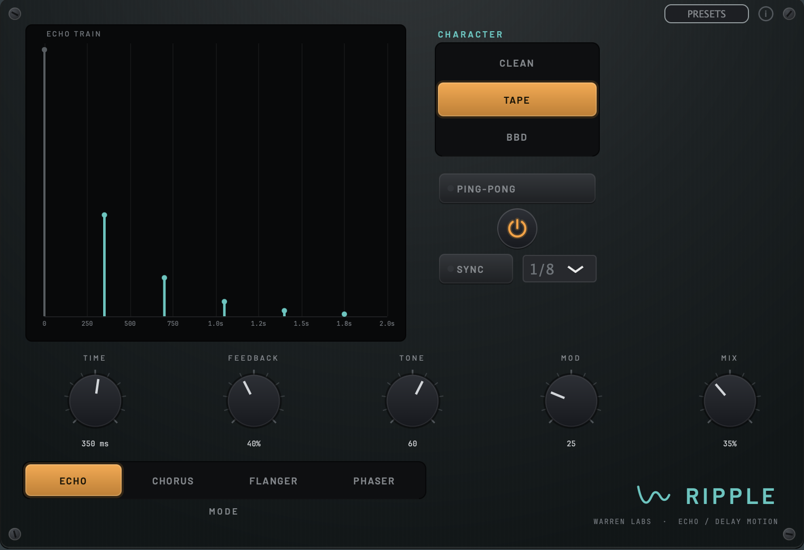
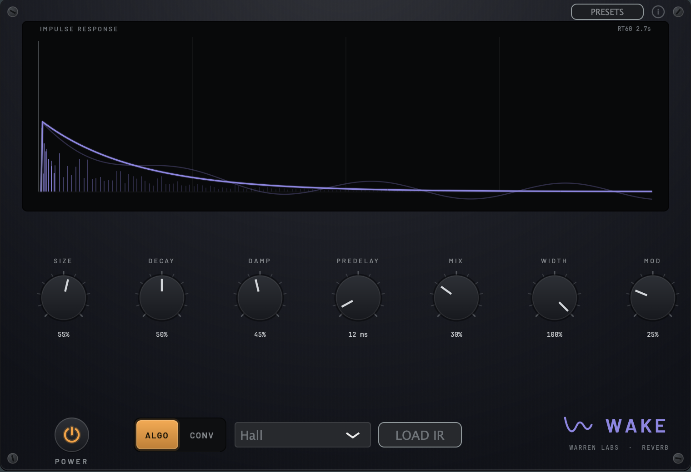

Tools that tell the truth.
Reference, correction, and metering on the Trueness line; color, dirt, space, and motion on the Character line. Built by a headphone-and-studio veteran, shared engine by shared engine. Now in public beta.
Everything you need to hear the mix honestly.
Five corrective and diagnostic tools on one shared engine: metering that shows what the low end really does, an EQ and a compressor, a resonance suppressor that also de-esses and de-muds, and a matching EQ that doubles as a translation check.
Heat, motion, and space.
Three colour tools, each covering a whole corner: six saturation models from tube warmth to full fuzz, echo plus chorus/flanger/phaser on one delay core, and a reverb that runs both an FDN and real captured spaces.
Every Warren Labs plugin, one install.


Level

Square

Scribe


Pare

Bevel

Brace

Temper

Ripple
